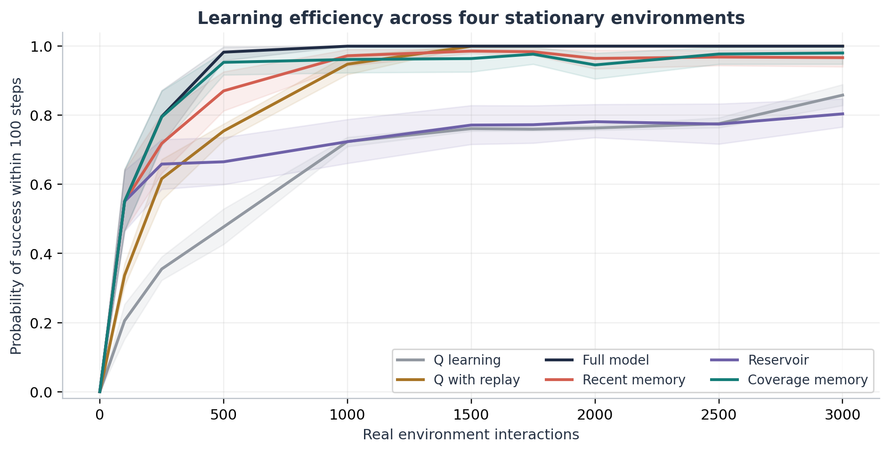
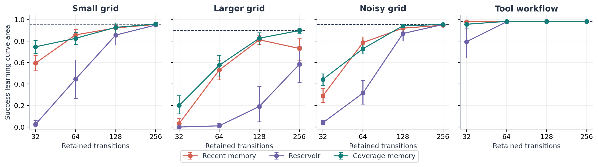
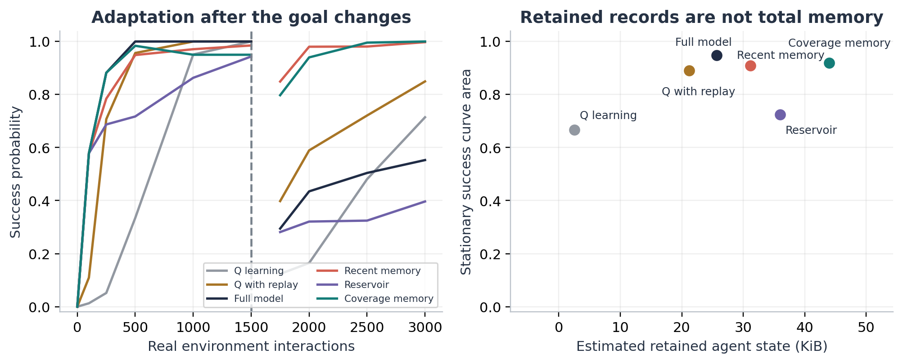
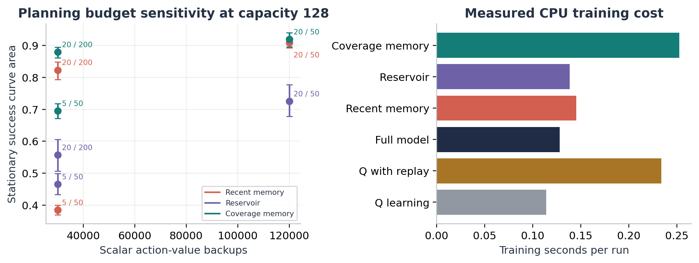
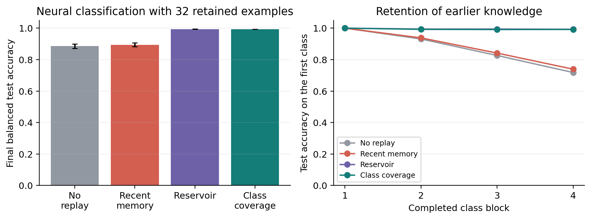

Research by SID Machines
Research report
Research directed by the company owner
This report is privately circulated by the owner of SID Machines for authorized recipients only. It is not intended for public distribution. Do not reproduce, publish, or forward it without the owner's permission.
SID Machines | Private research study
Efficient learning requires a choice about which experiences to retain and how much computation to spend reusing them. We extend a small gridworld project into a controlled study of 2,100 seeded agent runs across five finite-state environments, followed by 140 exploratory neural-classifier runs. Agents receive equal budgets of 3,000 real interactions. We compare Q learning, experience replay, planning from full transition statistics, and planning from recent, reservoir, or coverage-based memories. Policy success is evaluated exactly over a 100-step horizon. At the preselected 128-transition capacity, coverage memory improves the stationary success-curve area over recent memory by 0.0106, with a paired 95% bootstrap interval of [-0.0095, 0.0290]; this does not establish an average advantage. After a goal change, recent memory achieves a post-change success area of 0.971, compared with 0.472 for full-history statistics. In a separate synthetic neural task, 32-example class-balanced and reservoir memories retain about 99.3% balanced accuracy, versus 89.4% with recent memory. Limited raw-history capacity does not guarantee lower total storage or computation. The results support task-dependent memory selection and explicit planning budgets, while providing a testable design for future LLM-agent evaluation. No LLM or GPU experiment is reported.
The starting question was whether an agent can remain effective while learning from less experience. A learned transition model can reuse one interaction in many planning updates, but this reuse has a computational cost. A short memory can remove obsolete evidence, yet it can also erase the only observations connecting a start state to a goal. These effects should be measured separately.
This study asks how retention strategy and planning depth affect task success under fixed interaction budgets. Its contribution is an auditable comparison and a characterization of failure modes across stationary control, changed objectives, and a small neural continual-learning task. It does not introduce a new reinforcement-learning family or establish a universal memory threshold.
Dyna connects learned models, planning, and reinforcement learning [1]. Reservoir sampling supplies a standard history-sampling baseline [2]. Selective experience replay, including coverage and distribution matching, is established prior work [3]. Our experiment therefore tests a concrete selection rule rather than claiming novelty for selective memory. Reporting seed uncertainty follows the evaluation concerns raised by Agarwal et al. [4]; separating performance from cost follows Kapoor et al. [8].
Every agent observes a state identifier, selects an action, and receives a reward, next-state identifier, and terminal flag. State and action counts are known, but transition probabilities, rewards, walls, and the goal location are not supplied. Training uses epsilon-greedy exploration with epsilon 0.15 and discount 0.95. Ties during training are randomized; evaluation uses the first maximizing action deterministically.
| Method | Learning and retention rule |
|---|---|
| Q learning | One tabular temporal-difference update per real interaction; learning rate 0.1. |
| Q with replay | The same update plus four uniform replay updates from a recent 128-transition buffer. |
| Full model | All observed transition counts and reward sums; raw history is not stored. |
| Recent memory | Model statistics computed from the most recent M transitions, with oldest-first eviction. |
| Reservoir | Model statistics from a uniform sample of M transitions from all experience so far. |
| Coverage memory | Preferentially remove old records from the most represented state-action group. |
After appending a transition, count buffer records by their state-action pair. If capacity is exceeded, identify the largest group count and evict the oldest record belonging to any group with that count. The rule encourages coverage while replacing redundant observations. It does not use future rewards, goal labels, the evaluator, or an importance oracle. With very small capacity, retaining broad coverage can still leave too few observations per transition distribution.
Model-based agents estimate transitions from counts and expected rewards from reward sums. Terminal outcomes have zero continuation value. At each planning event, synchronous value iteration starts from zero and performs 20 sweeps by default. Each sweep evaluates every state-action pair using the learned expected immediate reward plus discounted successor value. Unobserved pairs have value zero. The final action-value table defines the greedy policy. Planning occurs every 50 interactions; evaluations do not trigger an additional plan.
Resetting planning values to zero prevents warm-start values from silently retaining information removed from the memory buffer. The current policy remains in use between planning events, so the transition capacity is not a hard cap on every form of stored information. Agents also retain action values, counters, random-generator state, and sparse model statistics. We report estimated total retained agent-state bytes separately.
Coverage eviction scans a buffer of at most M records, giving O(M) eviction time in this implementation. Planning performs work proportional to the retained transition edges and the number of state-action pairs per sweep. Full-model storage grows with distinct observed outcomes, not with the length of the raw trajectory. These implementation details materially affect efficiency comparisons.
| Environment | States and dynamics | Purpose |
|---|---|---|
| Small grid | 5 by 5; 21 states; 0.10 action slip | Connection to original project |
| Larger grid | 7 by 7; 38 states; 0.10 action slip | Longer paths and greater coverage demand |
| Noisy grid | Small grid with 0.30 action slip | Transition-estimation sensitivity |
| Changed goal | Small grid; goal moves after step 1500 | Adaptation to obsolete reward evidence |
| Tool workflow | 16 encoded states; 6 reachable; 5 actions | Finite-state prerequisite and retry task |
Grid slip chooses uniformly among all four actions, including the intended action. Walls cause no movement. Steps cost -0.01 and reaching the goal gives +1. The changed goal moves to the bottom-left corner without notifying the agent. The simulated tool task requires two fetches, a join, validation, and submission, with 15% transient failure. Full reward and transition rules are in the code.
The main design contains 15 configurations per environment: three baselines and three memory rules at capacities 32, 64, 128, and 256. Twenty paired seed values produce 1,500 runs. A further 600 runs test 5 sweeps every 50 steps and 20 sweeps every 200 steps at capacity 128. Every run receives 3,000 interactions; episodes reset on success or after 100 steps. Methods act on their own policies and therefore do not receive identical experience streams.
The primary endpoint is normalized success-curve area across four stationary environments; the primary contrast is coverage minus recent memory at capacity 128. Ten checkpoints span 0 to 3,000 interactions. Exact evaluation removes rollout noise, not uncertainty about unseen environments. Intervals resample 20 paired seed blocks 10,000 times. Secondary comparisons are exploratory and not multiplicity-adjusted.
| Method | Success area | 95% interval | Final success | State KiB |
|---|---|---|---|---|
| Q learning | 0.667 | [0.658, 0.677] | 85.8% | 2.5 |
| Q with replay | 0.891 | [0.884, 0.897] | 100.0% | 21.2 |
| Full model | 0.949 | [0.940, 0.957] | 100.0% | 25.7 |
| Recent memory | 0.909 | [0.893, 0.925] | 96.7% | 31.2 |
| Reservoir | 0.725 | [0.678, 0.779] | 80.4% | 36.0 |
| Coverage memory | 0.920 | [0.896, 0.940] | 98.0% | 44.0 |
Table 1. Means across four stationary environments at capacity 128 where applicable. Success area rewards early and sustained learning; it is not final accuracy. State KiB estimates retained Python objects and array storage, excluding process overhead and temporary planning arrays. Full model has no raw-transition capacity.
Full-model planning learns fastest here. The primary coverage-minus-recent difference is compatible with a small disadvantage or advantage. Replay improves Q learning. Interaction budgets are equal; computation budgets differ.


The original project suggested a transition near 128 stored experiences in one map. The expanded study shows why that number cannot be transferred as a general threshold. At capacity 32, recent memory scores 0.979 success area on the short tool workflow but only 0.033 on the larger grid. Coverage scores 0.956 and 0.201 respectively. Larger buffers usually help, but the recent-memory curve is not monotonic on the larger grid. Capacity changes the learned policy and hence subsequent experience, so more history need not improve every finite-budget run.
Coverage retains more distinct state-action pairs at capacity 128: a stationary mean of 70.1 versus 26.0 for recent memory. Greater breadth alone does not guarantee better control; local estimation quality, goal connectivity, and timely replacement also matter. The reservoir baseline performs poorly in the larger grid at this budget, despite being useful in the neural extension.

On the changed-goal task, recent memory achieves a post-change success area of 0.971 [0.942, 0.993], versus 0.472 [0.278, 0.670] for full-model statistics and 0.334 [0.173, 0.504] for reservoir memory. Coverage reaches 0.960 [0.915, 0.990]. These areas cover the measured post-change interval from 1750 to 3000; they exclude the first 250 interactions after the change.
The retained historical outcomes now mix two reward and termination regimes. Recent memory replaces obsolete evidence quickly; a reservoir continues to represent the entire observed history. This is a plausible explanation consistent with the design, rather than a separately isolated causal mechanism. The experiment tests a specific unannounced goal change. A model receiving an explicit task identifier or using recency-weighted statistics could behave differently.
Full-model planning retains about 25.7 KiB on the stationary suite, compared with 31.2 KiB for recent memory and 44.0 KiB for coverage at capacity 128. Full-model counts aggregate repeated outcomes, whereas bounded agents retain individual transitions, group counts, and model statistics. Therefore, a buffer containing only 4.3% of the 3,000 observed transitions can still occupy more space than a full learned tabular model.
The byte estimate recursively counts retained Python objects and NumPy storage. Analysis explicitly corrects the raw counter for the owning array behind the planner action-value view. This correction is exposed as its own column. The estimate is implementation-dependent and excludes temporary work arrays, process memory, and device allocations. It should not be read as a GPU-memory measurement.
For compact tabular dynamics, aggregate statistics are a strong baseline. Raw-memory reduction is useful only if its storage representation, selection overhead, and adaptation behavior fit the application. A claim of overall efficiency must name the resource actually reduced.

At the same mean budget of 30,000 scalar action-value backups, coverage with 20 sweeps every 200 interactions obtains success area 0.880, versus 0.695 with 5 sweeps every 50 interactions. Recent memory shows a larger separation: 0.823 versus 0.385. Allocating the same number of updates across planning events can therefore produce different policies.
Because planning restarts from zero, a synchronous backup propagates reward information only one transition farther per sweep. Five sweeps may be insufficient to connect a distant reward to the start state. This explains why cutting the number of sweeps is a different intervention from planning less often. The result is specific to this planner; warm starts, asynchronous updates, prioritized sweeping, and learned value functions are not tested.
At the default setting, coverage takes about 0.252 seconds per stationary run, recent memory 0.145 seconds, and full-model planning 0.128 seconds. Q learning takes 0.114 seconds, while replay takes 0.234 seconds. Vectorized planning and Python-level replay have different per-backup costs. Scalar backup counts are therefore a work proxy, not FLOPs, energy, or a universal runtime conversion.
The timing includes action selection, environment simulation, learning, memory selection, and planning. It excludes policy evaluation and deep memory inspection. Runs execute serially on a shared Windows CPU host; subsecond timings are descriptive and sensitive to implementation and host activity. No hardware energy or GPU utilization was measured.
An agent designer should budget both real interactions and internal planning. If interactions are expensive, extra planning may be worthwhile. If the environment is cheap and the state space is small, a simpler learner may be preferable. A joint evaluation should report a success-cost curve, rather than treating either fewer interactions or fewer retained records as sufficient evidence of lower total cost.
To test whether the memory question is meaningful beyond tabular planning, a separate experiment trains a small neural classifier with 2 inputs, 32 tanh hidden units, 4 softmax outputs, and 228 parameters. Four Gaussian classes arrive in sequential blocks of 400 examples. Training uses one gradient step per arriving example; replay methods add four retained examples to each minibatch. A fixed, independently generated balanced test set contains 1,000 examples per class. Twenty initialization and data seeds across seven configurations produce 140 runs.

| Method | Capacity | Accuracy percent and 95% interval | Examples processed |
|---|---|---|---|
| No replay | 0 | 88.59 [87.07, 89.94] | 1,600 |
| Recent memory | 32 | 89.43 [88.23, 90.60] | 7,996 |
| Recent memory | 128 | 90.70 [89.77, 91.69] | 7,996 |
| Reservoir | 32 | 99.38 [99.29, 99.44] | 7,996 |
| Reservoir | 128 | 99.51 [99.46, 99.55] | 7,996 |
| Class coverage | 32 | 99.34 [99.26, 99.40] | 7,996 |
| Class coverage | 128 | 99.48 [99.44, 99.53] | 7,996 |
Class coverage groups examples by their observed training label and evicts from the most populated class. At capacity 32, class coverage exceeds recent memory by 9.90 percentage points [8.72, 11.10], while reservoir memory is similarly effective. The small numerical difference between class coverage and reservoir is not presented as a meaningful advantage.
Unlike the changed-goal task, this evaluation still requires earlier classes to be recognized. A memory preserving historical diversity is therefore useful. All replay methods process 7,996 training-example presentations versus 1,600 without replay, although they use the same number of gradient steps. This is evidence of improved retention under replay, not evidence of reduced training compute. The extension is exploratory, uses one synthetic distribution, and does not establish transfer to deep networks or LLMs.
The relevant LLM application is a memory and planning layer around a fixed pretrained model. It would store verified action outcomes, retrieve a bounded set relevant to a current task, and use those records when selecting or checking tool calls. ReAct establishes a reasoning-and-action loop [5], Reflexion uses feedback and memory without updating model weights [6], and LATS combines language agents with search [7]. These precedents make the application plausible; they do not validate the specific retention rule studied here.
A candidate memory record would include an abstract task state, tool name, required conditions, observed outcome, success or failure, and environment version. Recent records would help replace obsolete tool behavior; a separate diverse archive could preserve rare but valid failure cases. In a language setting, the state abstraction itself can be wrong, and records vary in length. A fair test must impose token or byte budgets, measure retrieval and summarization costs, and validate outcomes independently. A hybrid archive is a proposal, not an evaluated method in this paper.
A practical next experiment would compare the same frozen model and prompt with no cross-task memory, recent memory, reservoir memory, and coverage-based memory on held-out tool tasks. It should measure task success, invalid calls, input and output tokens, total latency, and adaptation after a version change. Calibration tasks must be separate from final test tasks, and memory must never contain hidden test answers. The supplement specifies a local evaluation plan with a prospective success criterion.
Larger pretraining datasets are not inherently the cause of agent failures. Pretraining cost, inference cost, task adaptation, and long-context retrieval are different problems. Long-context retrieval limitations have been observed in specific settings [9], but the experiments here neither compress model weights nor reduce pretraining data. No GPU savings, LLM accuracy improvement, deployed reliability, or broad model-size claim follows from these results.
The control tasks have exact state identifiers, small discrete action spaces, fixed starts, and known state/action counts. Three stationary tasks share a navigation family; the tool task has only six reachable encoded states. There is no held-out map distribution, partial observability, language parsing, or real API execution. Exact evaluation is exact only for the supplied simulator and 100-step horizon. The seed intervals condition on these selected tasks, not on all possible applications.
Hyperparameters are fixed rather than exhaustively tuned for every baseline. Only three retention rules and two planning perturbations are tested. Dense action-value storage and sparse Python dictionaries affect memory and runtime. Planning restarts from zero, making sweep depth especially important. The neural extension uses small synthetic data and label-aware grouping; it should not be equated with unsupervised LLM memory. Secondary intervals are exploratory and unadjusted for multiple comparisons.
The experiments support a conditional answer to the original efficiency question. Reusing experience through a learned model can improve interaction efficiency, but memory selection must match whether past information remains useful. Coverage is not a universal winner, recent evidence can aid adaptation, and full transition statistics can be smaller than a bounded raw buffer. These distinctions provide concrete design and evaluation requirements for future practical agents.
[1] Sutton, R. S. (1990). Integrated Architectures for Learning, Planning, and Reacting Based on Approximating Dynamic Programming. Proceedings of the Seventh International Conference on Machine Learning, 216-224.
https://doi.org/10.1016/B978-1-55860-141-3.50030-4
[2] Vitter, J. S. (1985). Random Sampling with a Reservoir. ACM Transactions on Mathematical Software, 11(1), 37-57.
https://doi.org/10.1145/3147.3165
[3] Isele, D., and Cosgun, A. (2018). Selective Experience Replay for Lifelong Learning. Proceedings of AAAI, 32(1), 3302-3309.
https://arxiv.org/abs/1802.10269
[4] Agarwal, R., Schwarzer, M., Castro, P. S., Courville, A., and Bellemare, M. G. (2021). Deep Reinforcement Learning at the Edge of the Statistical Precipice. Advances in Neural Information Processing Systems, 34.
https://arxiv.org/abs/2108.13264
[5] Yao, S., Zhao, J., Yu, D., Du, N., Shafran, I., Narasimhan, K., and Cao, Y. (2023). ReAct: Synergizing Reasoning and Acting in Language Models. International Conference on Learning Representations.
https://arxiv.org/abs/2210.03629
[6] Shinn, N., Cassano, F., Berman, E., Gopinath, A., Narasimhan, K., and Yao, S. (2023). Reflexion: Language Agents with Verbal Reinforcement Learning. arXiv:2303.11366, version 4.
https://arxiv.org/abs/2303.11366
[7] Zhou, A., Yan, K., Shlapentokh-Rothman, M., Wang, H., and Wang, Y.-X. (2024). Language Agent Tree Search Unifies Reasoning, Acting, and Planning in Language Models. Proceedings of ICML, PMLR 235, 62138-62160.
https://proceedings.mlr.press/v235/zhou24r.html
[8] Kapoor, S., Stroebl, B., Siegel, Z. S., Nadgir, N., and Narayanan, A. (2024). AI Agents That Matter. arXiv:2407.01502.
https://arxiv.org/abs/2407.01502
[9] Liu, N. F., Lin, K., Hewitt, J., Paranjape, A., Bevilacqua, M., Petroni, F., and Liang, P. (2023). Lost in the Middle: How Language Models Use Long Contexts. arXiv:2307.03172, version 3.
https://arxiv.org/abs/2307.03172
The archive includes all 21,000 main-study checkpoint records, 560 neural checkpoint records, per-run metrics, configuration summaries, source code, software versions, protocols, and an unchanged copy of the original project. Main execution completed 2,100 runs in 392.6 seconds on the recorded host. These are seeded experimental repetitions, not 2,100 distinct agent architectures.
The primary local protocol was recorded before the main run; it was not publicly preregistered. A bootstrap specification and array-storage accounting correction are documented in the research notes. The neural extension has a separate prospective protocol. This study belongs to the SID Machines research project and builds on its original gridworld investigation. All new numerical results were executed locally. No external model API was called.